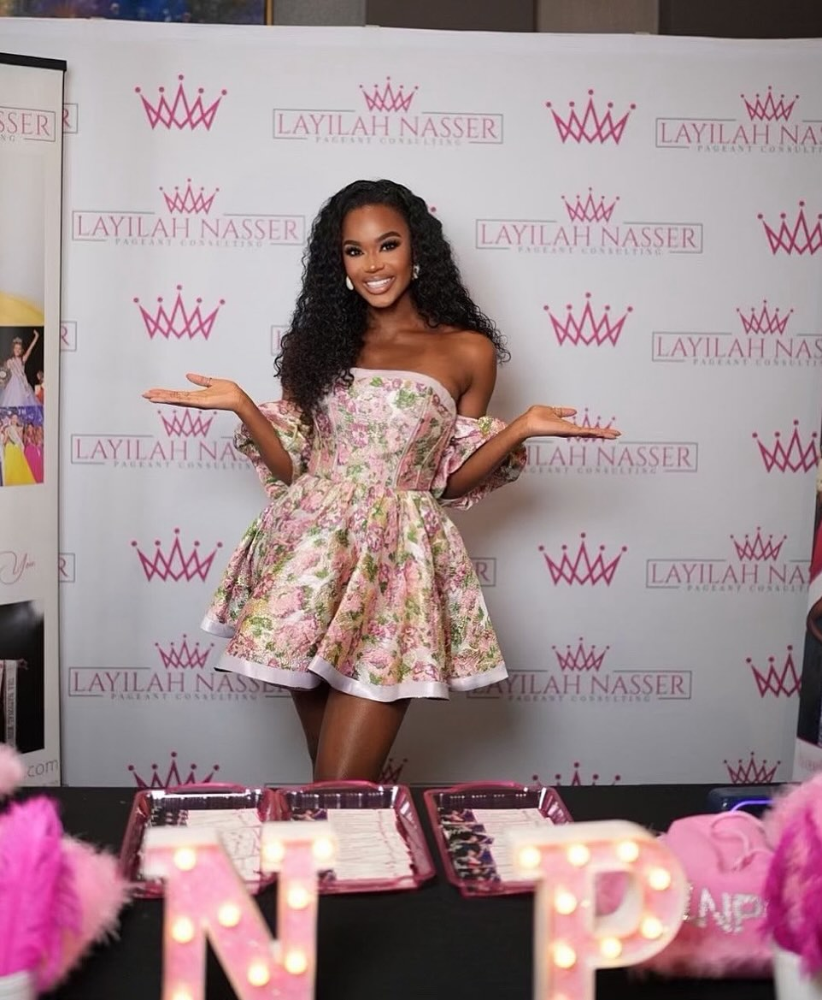
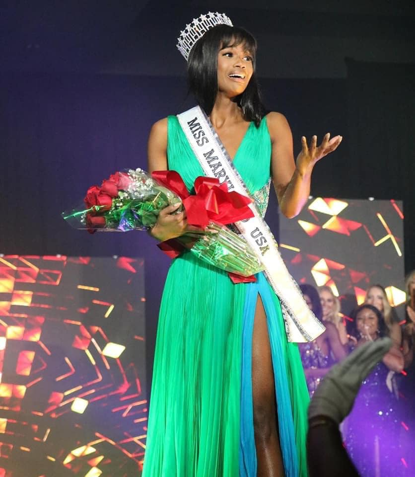
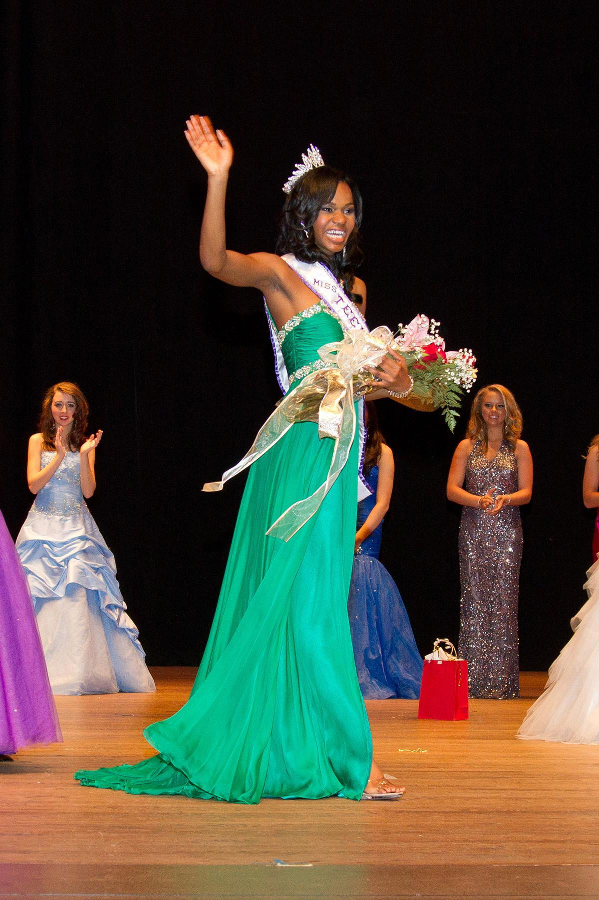
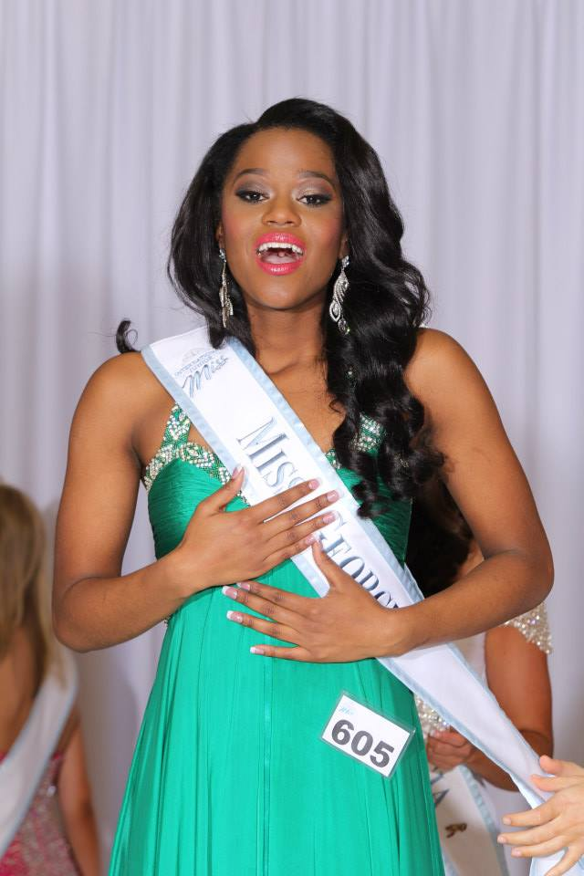
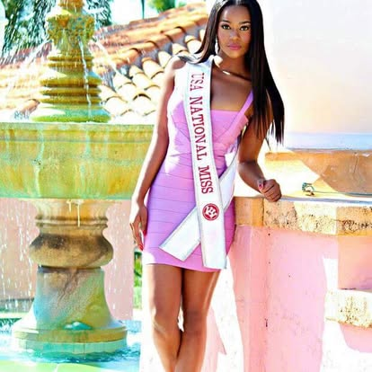

Who is Coach Lay?
Building confident, polished, and purposeful contestants from the inside out.
I believe title-winning preparation starts with a strong foundation. My coaching is designed to help each contestant show up with clarity, confidence, and a style of presence that feels true to who she is.
About

My Story
I'm Layilah Nasser (Coach Lay), founder of Layilah Nasser Pageant Consulting, former Miss Maryland USA 2021, and a Top 8 finisher at Miss USA. My experience in pageantry has given me firsthand insight into the level of preparation, strategy, and confidence it takes to stand out on a competitive stage.
Over the years, I have had the privilege of coaching contestants across a wide range of systems and divisions, helping them strengthen their interview skills, refine their walk, elevate their stage presence, and step into competition feeling fully prepared. My work is rooted in both excellence and authenticity because I believe the strongest contestants are not trying to be someone else. They are learning how to present the very best version of themselves.
Coaching
My Coaching Style
My coaching style is personalized, strategic, and detail oriented. I do not believe in a one-size-fits-all approach because every contestant has a different personality, timeline, set of goals, and competitive edge. That is why each lesson is tailored to meet the individual needs of the client.
Whether we are working on interview, walking, routine development, confidence building, or overall presentation, my goal is to create a supportive space where growth feels both intentional and empowering. I want my clients to leave each session not only with stronger skills, but with a deeper belief in what they are capable of accomplishing.
Competition Moments
A career built on the stage



